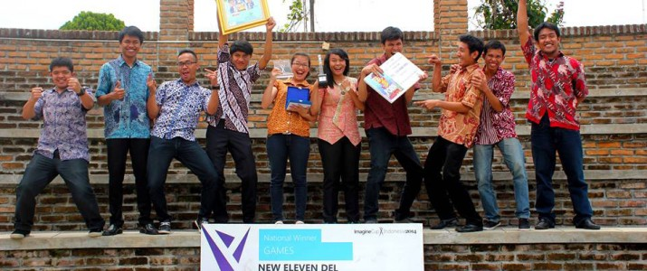
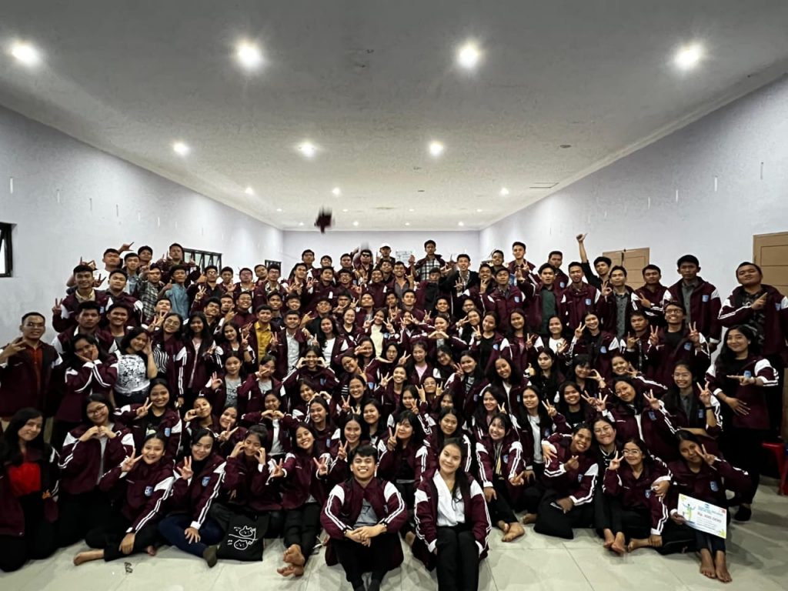
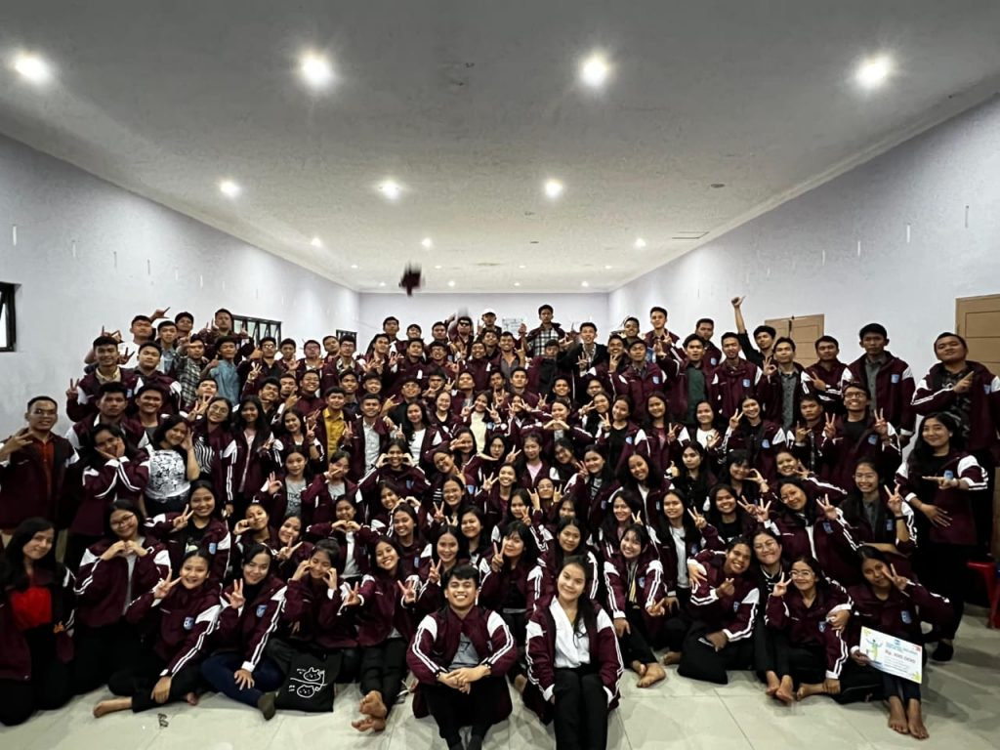

Institut Teknologi Del
Martuhan,Marroha,Marbisuk
Home
Tentang Del
Program Pendidikan
Fasilitas
Civitas
Komunitas
ID
Berita Terkini
Institut Teknologi Del
Martuhan,Marroha,Marbisuk
CONTACT US
Telp: +62 632 331234
Fax: +62 632 331116
Website: http://www.del.ac.id
Email: info@del.ac.id
Karir: karir@del.ac.id
Address
Institut Teknologi Del
Jl. Sisingamangaraja, Sitoluama Laguboti, Toba Samosir Sumatera
Utara, Indonesia
Kode Pos: 22381
Kegiatan
Pada Hari Jumat, 27 Oktober 2023 diadakan Rapat Koordinasi KM-IT Del Periode 2023/2024 yang dihadiri oleh Bapak Dr. Arnaldo Marulitua Sinaga, ST., M.InfoTech. (Rektor IT Del), Ibu Mariana Simanjuntak, S.S., M.Sc (Direktur Pendidikan IT Del), juga Bapak dan Ibu Unit Kemahasiswaan. Rapat koordinasi ini dilakukan dengan tujuan untuk meningkatkan komunikasi antar anggota tim atau departemen dalam melakukan tugas dan tanggungjawab. Dalam setiap kegiatan dan koordinasi diharapkan untuk saling kolaborasi untuk mencapai tujuan bersama serta mencari ide-ide dan solusi terbaik...
Pendaftaran
Informasi Beasiswa

Pendaftaran IT Del
1. Jalur PMDK
2. Jalur USM 1
3. Jalur USM 2
4. Jalur USM 3
5. Jalur UTBK
Beasiswa Institut Teknologi Del
1. Beasiswa Prestasi
2. Beasiswa KIP Kuliah
3. Beasiswa PPA (Peningkatan Prestasi Akademik)
4. Beasiswa Sea Scholarship
5. Beasiswa Alumni
Prestasi
Kerja Sama
Prestasi
selengkapnya
3. Peraih TeSCA Award 2014
Prestasi yang telah diraih oleh IT Del antara lain:
1. Pernah menjadi Perpustakaan Terbaik se-Sumatera Utara 2012
2. Wakil Indonesia dalam Semi final Imagine Cup Dunia 2014 kategori “The Apps for Office Challenge Round One”
Kerja Sama Strategis IT Del antara lain :
1. KTH (Royal Institute of Technology) Stockholm, Swedia
2. Weizmann Institute of Science, Tel Aviv, Israel
3. Afeka College, Tel Aviv, Israel
4. PT. Telkomsel
5. Universitas Gadjah Mada
6. Institut Teknologi Bandung (ITB)
 

IT Del Menjadi Tuan Rumah 29th IEEE ICT Conference
Sosialisasi Data Diri untuk PDDikti dan Peraturan Kampus kepada Mahasiswa Angkatan 2023
399 Mahasiswa IT Del Mengikuti Retreat untuk Meningkatkan Karakter 3M (MarTuhan,Marroha,Marbisuk)
Institut Teknologi Del berperan sebagai host dalam International
Conference on Telecommunications (ICT) untuk edisi yang ke-29. ICT
merupakan konferensi yang berfokus pada kemajuan dan penelitian
terkini dalam bidang telekomunikasi. Konferensi ini berlangsung pada
tanggal 8-9 November 2023 berlokasi di Toba, Indonesia.
Kegiatan dimulai dengan pembukaan oleh Bapak Oka Simatupang, S.Sos selaku moderator acara yang dilanjutkan dengan sambutan hangat dari Wakil Rektor Bidang Akademik dan Kemahasiswaan Bapak Dr. Johannes Harungguan Sianipar, S.T., M.T., dan Direktur Pendidikan Ibu Mariana Simanjuntak, S.S., M.Sc , lalu dilanjutkan dengan pemaparan materi yang diberikan oleh Bapak Anggiat Saud Parulian, S.Tr.Kom.
Sebagai bentuk untuk meningkatkan karakter Del yakni 3M (MarTuhan, Marroha, Marbisuk) mahasiswa IT Del angkatan 2021 sebanyak 399 orang melaksanakan retreat dan outbond. Kegiatan ini dilaksanakan dengan 2 gelombang yakni Gelombang I pada tanggal 29-29 Oktober 2023 dan Gelombang II pada tanggal 4-5 November 2023. Retreat dilaksanakan di Bukit Gibeon Sibisa yang didampingi oleh Bapak dan Ibu Asrama IT Del.